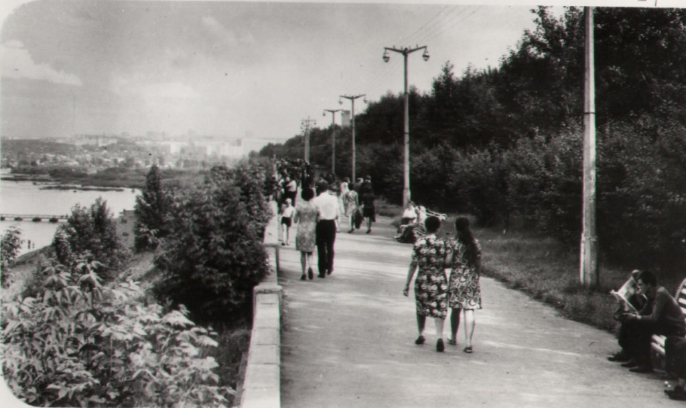
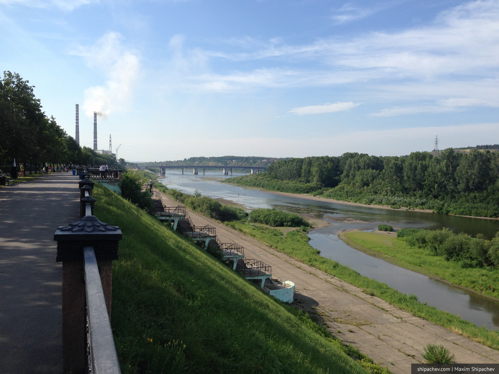

Проверяем работу LTE Билайна на кемеровской набережной в рамках проекта «Сибирские скорости» и знакомим гостей города с городом Кемерово.
В городе Кемерово (в его центре) протекает две реки: река Томь и впадающая в неё небольшая река Искитимка.
Набережная реки Томь, наряду с прилегающей к ней улице Весенняя — привычный для кемеровчан променад. Практически в любое время суток здесь встретишь прогуливающихся горожан и гостей областного центра.
Прежнее названием Притомской набережной — улица Тёмная. Переименована была в 1920 г.

Набережная реки Томь в Кемерове это не только вид на реку. Именно с набережной в центре города можно попасть на остров на реке, который служит многим горожанам городским пляжем. В годы, когда высота воды позволяет, к мосту возводят понтонный мост. К сожалению, последние пару лет точно, воды для этого моста не хватает и кемеровское Малибу доступно только тем, кто переходит реку до острова вброд.

На противоположном берегу реки расположен сосновый бор — лёгкие города. В коммунистические времена через реку планировали построить канатную дорогу, но немного не успели. Идея реанимирования проекта периодически появляется в головах кемеровчан, но пока всё остаётся только идеей. Немым укором служит остов станции канатной дороги со стороны набережной вблизи Горсуда.
Скорость мобильного интернета Билайн на набережной — составила 36,05 мегабит в секунду